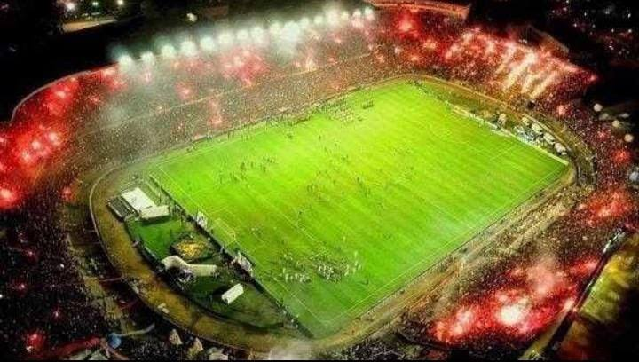
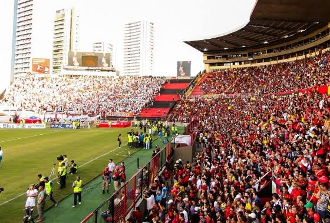

Jogos Marcantes
1. Campeonato Brasileiro de 1987
O Sport Recife se consagrou campeão brasileiro em 1987 após uma campanha memorável. Na final, realizada na Ilha do Retiro, o Sport enfrentou o Guarani em um jogo decisivo. Com uma atmosfera eletrizante e a torcida vibrando, o Sport venceu por 1 a 0, garantindo o título nacional. Esta conquista foi um marco na história do clube, tornando-o o primeiro do Nordeste a vencer o Campeonato Brasileiro, e solidificando a paixão da torcida pelo time.

2. Copa do Brasil 2008
Em 2008, o Sport Recife conquistou a Copa do Brasil de maneira histórica, com um desempenho notável na Ilha do Retiro. Na semifinal, o time enfrentou o Corinthians e venceu por 2 a 0, com uma apresentação brilhante que levou o Sport à final do torneio. A vitória foi crucial para a conquista do título, elevando o clube ao status de campeão nacional pela primeira vez e deixando uma marca indelével na história do futebol pernambucano.
3. Jogo com o Maior Público do Estádio
Um dos momentos mais icônicos da Ilha do Retiro ocorreu em 1995, quando o Sport enfrentou o Santa Cruz em um clássico regional que atraiu um público recorde. Com mais de 40 mil torcedores presentes, o estádio estava lotado, criando uma atmosfera única e vibrante. Este jogo, que terminou em 2 a 1 para o Sport, é lembrado não apenas pelo resultado, mas pela emoção e pela união da torcida, destacando a importância do futebol na cultura pernambucana.
